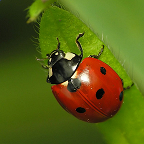
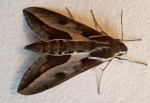
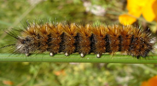

13:21
12:30

7:23

23:57
21:26
Entre los variados efectos del cambio climático, se encuentran las consecuencias sobre grandes familias del reino animal, entre ellas los insectos, arácnidos y miriápodos. Esto ha generado avistamiento de seres vivos en lugares en los cuales no solían habitar y es muy importante mantener un registro de estos avistamientos.
Es por esto que creamos Avistamientos, una pagina donde la comunidad podrá informar y ser informada sobre la aparicion de insectos, arácnidos y miriápodos que los rodean!
| Fecha - hora | Comuna | Sector | Tipo | Foto |
| 2021-03-29 13:21 | La Florida | Vicuña Mackena | Insecto |  |
| 2021-03-29 12:30 | Providencia | Plaza Dignidad | Aracnido | |
| 2021-03-29 7:23 | San Miguel | Salecianos | Aracnido | |
| 2021-03-28 23:57 | Pudahuel | Ciudad de los Valles | Insecto |  |
| 2021-03-29 21:26 | La Serena | Las Compañias | Insectos |  |